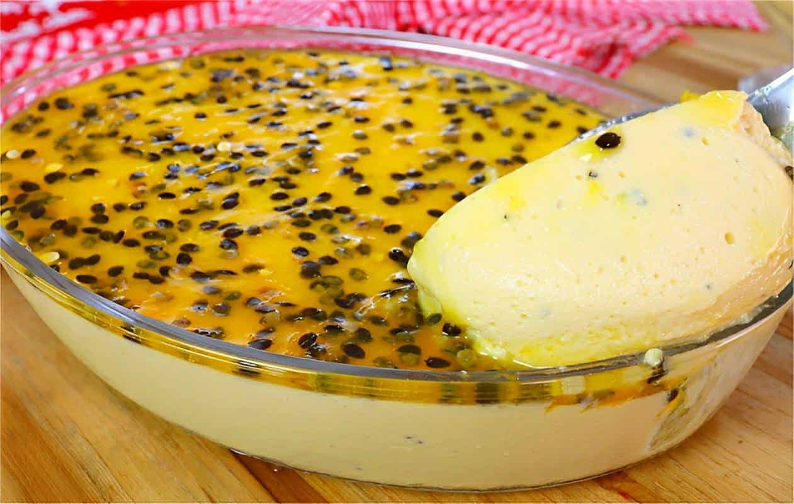

Mousse de Maracujá
Ingredientes (para 6 porções)
- 1 lata de leite condensado
- 1 lata de creme de leite
- 1 xícara de polpa de maracujá (cerca de 4 maracujás)
- Suco de 1 limão
Modo de Preparo
- No liquidificador, bata o leite condensado, o creme de leite, a polpa de maracujá e o suco de limão até ficar cremoso.
- Despeje em taças individuais ou em um recipiente grande.
- Leve à geladeira por pelo menos 2 horas para firmar.
- Sirva gelado, decorado com polpa de maracujá se desejar.